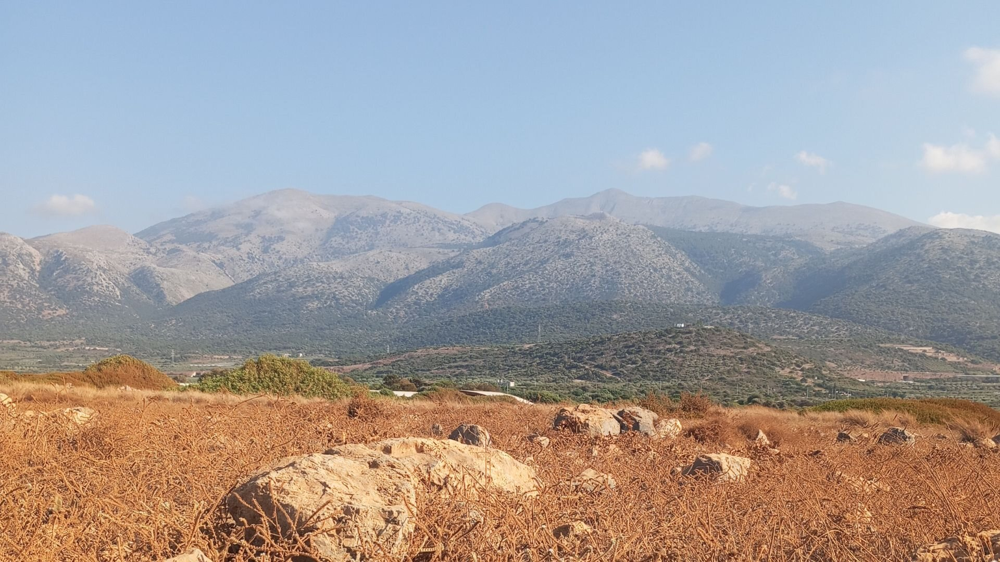

Πολλές φορές καθώς διαβάζω και ξαναδιαβάζω τον Κωστή Φραγκούλη, αναρωτιέμαι πως ένας άνθρωπος μπορεί να μεταφέρει αυτούσιες εικόνες τόσο καθαρά και ζωντανά μέσα από λέξεις. Όλοι οι «μεγάλοι» συγγραφείς είναι καλοί σε αυτό, στο να σε διευκολύνουν να φτιάχνεις εικονες διαβάζοντας τα έργα τους. Όμως ο Φραγκούλης δεν ήταν απλά «μεγάλος», αφού "έπλαθε" κυριολεκτικά δικές του λέξεις με «προζύμι» την κρητική διάλεκτο, απογειώνοντας την ευρηματικότητα και την φαντασία του στο γραπτό.
Σε αυτό λοιπόν το μικρό ποιηματάκι του ο Κωστής Φραγκούλης μας δείχνει πριν από πολλά χρόνια τι ακριβώς είναι αυτό που σήμερα ονομάζουμε περιβαλλοντική εκπαίδευση
όπως θα το έχετε ακούσει αρκετές φορές. Το να τονίζουμε συνεχώς πως και με ποιους τρόπους ο άνθρωπος είναι μέρος της φύσης και όχι κάτι ξεχωριστό από αυτήν.
Παρόλαυτά σπάνια διαβάζω κείμενα, τα οποία να συνοψίζουν με τόσο απλό και όμορφο τρόπο όσο αυτό το μικρό ποιηματάκι, την ουσία της σχέσης ανθρώπου και φύσης.
Ξεκινώντας από
τα ξύλα του βουνού και τα δεντρά του κάμπου για να μας πάει στο αλέτρι και στο ζυγό και από εκεί στη λύρα και στο τραγούδι για να μας δείξει τι αξία έχει η καρυδιά, πόσα
αγαθά μας δίνει. Θα μου πείτε πολύ ανθρωποκεντρικό αυτό, καθώς βιάζεστε να κρίνετε από την θαλπωρή που μας προσφέρει η εποχή μας και η καινούργια μεταμοντέρνα ηθική. Αλλά γιατί όχι;
Αυτό δεν κάνουν εκτός άλλων τα κείμενα, δεν μας προκαλούν και μας διεγείρουν συναισθήματα και σκέψεις; Όπως και να 'χει όμως ο Φραγκούλης δεν σταματάει εκεί.'
Ας τον αφήσουμε να έρθει να μας μιλήσει για την γνωστή σε όλους μας αγαπημένη Kαρυδιά από το αριστούργημα-ωδή στην κρητική φύση και κρητικό πολιτισμό "Τα Δίφορα"
Η Καρυδιά
Όλα τὰ ξύλα τοῦ βουνοῦ καὶ τὰ δεντρὰ τοῦ κάμπου,
δὲν ἔχουν ἴδια βγόδωση, δὲν ἔχουν ἴδια χάρη.
Τὄ 'να σκαμνάκι γίνεται, τ' ἄλλο θρονὶ τοῦ ρήγα,
τὸ παραπέρα κόνισμα, κάρβουνο τὸ παρέκει,
ζυγὸς κι ἀλέτρι τ' ἀπὸ 'δῶ, σοφρᾶς καὶ σκρίνιο τ' ἄλλο,
τό 'να στασίδι γὴ σταυρός, τ' ἄλλο προσκυνητάρι
γὴ μποτζαργάτης τῶν ἐλιῶ, κούνια γὴ καθελέτο.
Μὰ δέντρο σὰν τὴν καρυδιά, ὁ Θεὸς δὲν ἤκαμε ἄλλο,
γιατὶ 'χει εὐκὴ στὸ ξύλο τζη, εὐκὴ καὶ στὸν καρπό τζη
νὰ δίδει στὴ στεφάνωση καρύδι μὲ τὸ μέλι,
ὄντε σταθοῦν στὴν ἐκκλησὰ τ' ἀντρόυνα γιὰ βλόγια.
Δίδει τοῦ πρωτομάστορα τὰ ξύλα τζη γιὰ λύρες,
νὰ πελεκᾶ ψιμυθευτά, νὰ μορφοσκαφιδώνει'
στὴν κεφαλὴ δικέφαλο, πέρδικα στὸ καπάκι,
δεξὰ ζερβὰ στὰ μάγουλα, πουλιὰ νὰ κηλαϊδοῦνε,
στὸν καβαλάρη κυνηγό, λαγὸ νὰ σαϊτεύγει.

Καὶ στὰ γλυκοπατήματα, στὰ δαχτυλιώ τὰ ζάλα,
ποὺ μαρτυροῦνε τσὶ καημοὺς καὶ μολογοῦν τὰ πάθη,
παγώνι ἀνοιχτοφτέρουγο μ' ἀητὸ συνταιργιασμένο.
Στοῦ δοξαργιοῦ τὴν ἔχερη, σὲ μιὰ μεριὰ καὶ σ' ἄλλη,
ἀγρίμια κι ἀγριμιόφορα τὴ λέσκα νὰ πλουμίζου.
Νὰ παίζει ἡ λύρα, νὰ λαλεῖ, πιδέξα νὰ δηγᾶται,
τοῦ ψεύτη κόσμου τσὶ χαρές, τὰ ντέρτια τῶν ἀθρώπω,
τσὴ νιότης τὸ λουλούδισμα, τσ' ἀγάπης τὸ μεθύσι.